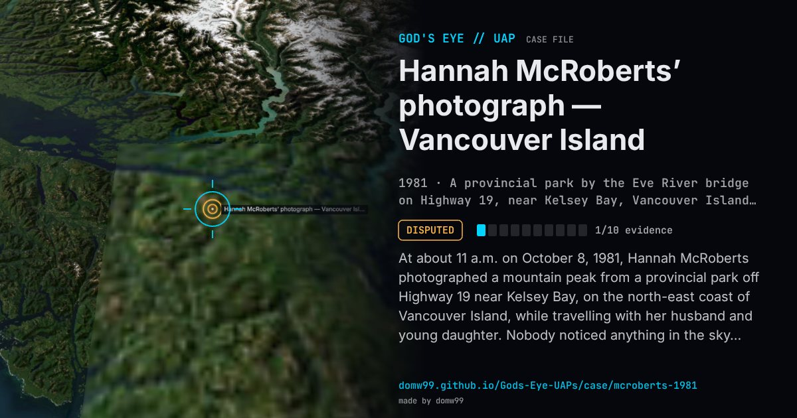

Hannah McRoberts’ photograph — Vancouver Island

At about 11 a.m. on October 8, 1981, Hannah McRoberts photographed a mountain peak from a provincial park off Highway 19 near Kelsey Bay, on the north-east coast of Vancouver Island, while travelling with her husband and young daughter. Nobody noticed anything in the sky. When the film was developed days later, one frame showed a sharply focused, dark, domed disc above the peak. Richard Haines, a perception scientist at NASA Ames, examined the original negative with micro-densitometry and computer enhancement, visited the site and interviewed the family; he found no evidence of a hoax, concluded the object was three-dimensional and at least 30 feet away, and presented the photograph to the 1997 Sturrock panel on UFO evidence. It is still one of the most reproduced UFO photographs, and one of the most argued over.
Explanation
The NASA scientist Richard Haines examined the negative in 1987 and found no sign of tampering or a support thread; his measurements put the disc at least 30 feet from the camera, and interviews and a site survey supported the family’s account. Because nobody saw the object, a thrown object (a Frisbee, a hubcap or a pan lid have been suggested) cannot be ruled out, and later re-analyses from prints rather than the negative leave the case open.
What was seen
Shape: A sharply focused, domed disc against clear blue sky above a mountain peak
Witnesses: None saw the object; the photographer, Hannah McRoberts, her husband and daughter were present
Duration: One frame of 35 mm colour film
Sources
- Patrick Gross — the McRoberts photograph and Haines’s analysis
- Metabunk — Hannah McRoberts’ 1981 UFO revisited